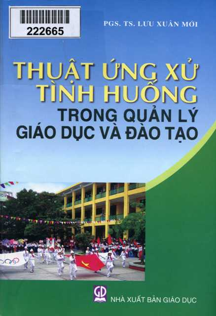

Lâu rồi mới cầm trên tay một cuốn sách lạ, lạ không bởi câu chữ có gì to tát, khó hiểu mà lạ bởi nội dung cuốn sách đề cập đến. Tôi cứ nghĩ thật khó để kéo người đọc theo chân tác giả vào không gian có vẻ khô cứng đó trong khi có biết bao cuốn sách hấp dẫn khác đang chờ đợi họ. Nhưng đứng ở góc độ những người làm công tác quản lý giáo dục thì cuốn sách này có lẽ thực sự là niềm vui, là nỗi mong chờ vì sự thiết thực mà nó mang lại. Đó chính là cuốn sách “Thuật ứng xử tình huống trong quản lý giáo dục và đào tạo” của PGS.TS Lưu Xuân Mới do Nhà Xuất bản Giáo dục ấn hành vào năm 2008. Như chúng ta đã biết, mỗi hoạt động và quan hệ quản lý, xét đến cùng đều diễn ra trong cách đối nhân xử thế giữa con người với nhau, mà ở đó người quản lý luôn phải ứng phó, xử lý với những tình huống đa dạng, phong phú nảy sinh trong quá trình điều khiển các hoạt động và mối quan hệ quản lý để đưa chúng trở về trạng thái ổn định, tiếp tục phát triển hướng tới mục tiêu mong muốn. Và thực chất của quản lý giáo dục là ứng xử các tình huống luôn xuất hiện trong quá trình quản lý. Nhà trường chính là nơi đang diễn ra một cách sinh động các tình huống quản lý, buộc người quản lý phải ứng xử để giải quyết, loại bỏ những mâu thuẫn xuất hiện trong tổ chức mà họ phải trực tiếp đương đầu. Công việc này đòi hỏi người cán bộ quản lý phải hết sức linh hoạt, biết lựa chọn, sử dụng sáng tạo những tinh hoa tiêu biểu nhất của các phương pháp quản lý, giáo dục, và hơn hết phải nhạy cảm, tinh tế để có thể khéo léo xử lý mọi việc một cách hoàn hảo. Rất nhiều trường hợp xảy ra khiến người quản lý lúng túng vì không thể sử dụng phương pháp quản lý thông thường, rập khuôn mà cần phải có tầm nhìn xa và thấu đáo mới có thể đạt kết quả tốt.  Trong điều kiện như thế, cuốn sách “Thuật ứng xử tình huống trong quản lý giáo dục và đào tạo” thực sự là một trong những cuốn sách hiếm hoi tổng hợp kinh nghiệm từ nhiều nguồn, là cẩm nang giúp người cán bộ quản lý hoàn thành tốt trọng trách của mình. Tác giả đã đưa ra những phép ứng xử tình huống trong quản lý giáo dục - vấn đề đang được nhiều nhà quản lý giáo dục quan tâm và chú ý. Những tình huống tương đối tiêu biểu trên các lĩnh vực: kế hoạch, tổ chức, chỉ đạo, kiểm tra - đánh giá trong quản lý giáo dục và một số tình huống trong công tác giáo dục học sinh của các giáo viên chủ nhiệm lớp đã được tác giả sưu tầm, lựa chọn rất công phu. Trong 2 chương “Tổng quan về tình huống và phương pháp ứng xử tình huống trong quản lý” và Tình huống và nghệ thuật ứng xử tình huống trong quản lý giáo dục và đào tạo”, người đọc có thể dễ dàng tiếp cận được nội dung tác phẩm thông qua những câu chuyện thực sự sinh động, là những bài học sống cho những người làm công tác quản lý giáo dục đọc và suy ngẫm, từ đó rút ra những phương pháp ứng xử hợp lý cho trường hợp của riêng mình. 154 câu chuyện với nhiều tình huống khó nhưng cách giải quyết trong chuyện lại rất đơn giản, hợp lý chắc chắn sẽ khiến người đọc thấy thú vị và bổ ích. Những “Sự cố” qua tin truyền miệng khiến cô hiệu trưởng “tá hỏa” lên vì lo lắng cho các em học sinh đi tham quan, cắm trại ở Tam Đảo thông qua tin đồn thất thiệt khiến các vị phụ huynh kéo đến trường đông nghịt; Một bài toán nhân sự khó giải với lời kết truyện: “Đúng là cây ngay không sợ chết đứng. Nhưng muốn đứng vững thì sẽ phải bám chắc vào lòng đất, lòng người và thân cây cũng phải mềm dẻo để đung đưa với gió của trời đất và của cuộc đời” đã gợi cho người đọc một cách ứng xử khéo léo để thuận cả đôi đường; Hay cách sắp xếp tế nhị của hiệu trưởng với Hai người “con cưng” của trường khiến hai cái tên Hòa - Bình đang mâu thuẫn nảy lửa lại được ghép đôi hòa thuận như xưa; Rồi chuyện Chọn giáo viên thao giảng của hiệu trưởng cũng là bài học thiết thực cho người quản lý giáo dục trong thực tế khi không biết chọn ai bỏ ai trong kỳ thi giáo viên giỏi. Đặc biệt tôi thích nhất cách xử lý của cô hiệu trưởng trường mầm non trong câu chuyện thứ 74 Quanh chiếc phiếu bé ngoan. Làm một người quản lý trường mầm non tưởng đơn giản nhưng thực sự không dễ. Các cháu còn nhỏ, chưa biết cách cư xử, chưa biết phải trái đúng sai, chỉ khóc cười, buồn vui theo ý thích, vì thế cô giáo lại càng phải biết lựa chiều cư xử để bé không cảm thấy bị tổn thương và phát huy được sự ngoan ngoãn của mình. Cô giáo trong câu chuyện này đã có cách cư xử với bé Hà quá thẳng thừng, không hề có lời động viên mà còn vạch ra hàng lô thiếu sót của bé để chứng minh cho việc không phát phiếu bé ngoan của mình là đúng, khiến cho bé Hà xấu hổ còn mẹ bé thì trách giận. Cô hiệu trưởng khi nhận được đơn của mẹ bé Hà xin chuyển trường cho con đã có cách dàn xếp thật có lý có tình khiến mẹ bé Hà nhận ra mọi chuyện và không chuyển trường cho con nữa. Còn cô giáo của bé Hà cũng được hiệu trưởng nhẹ nhàng phân tích cho nghe về phương pháp giáo dục mầm non mà thấy thực sự ngấm, thấy cảm động về cái cách hiệu trưởng chia sẻ với mình. Hiệu trưởng nói “Khen chê là quy luật của sự phát triển nhân cách nhưng cũng là một nghệ thuật để đi vào lòng người, đi vào thế giới tâm hồn trẻ thơ. Phải rất tinh tế, mực thước, không được khô cứng, chiếu lệ, hình thức”. Những lời chia sẻ thân tình của hiệu trưởng trong phút chốc đã hóa giải được sự căng thẳng của cô giáo và làm dịu đi sự nóng giận của phụ huynh. Như thế càng chứng tỏ một điều, biết cư xử thì không có việc gì là không giải quyết được... Hay như câu chuyện 122 Từ định kiến đến cảm phục là câu chuyện thú vị, có những nút thắt - mở rất hợp lý. Anh thanh tra của sở giáo dục từ trong suy nghĩ của cô giáo là người “mặt sắt đen sì” chỉ thích “vạch lá tìm sâu” qua buổi dự giờ tự nhiên lại làm thay đổi quan niệm của cô giáo. Chỉ bằng một ánh mắt khích lệ, bằng sự cảm thông, chia sẻ thể hiện qua điệu cười, giọng nói, thái độ thân tình, anh thanh tra đã trở thành một hình tượng đẹp, thể hiện sự thông minh, thân thiện, cách ứng xử chan hòa, khéo léo... vừa làm cô giáo nhận thức rõ vấn đề, vừa xóa bỏ khoảng cách giữa thanh tra và giáo viên. Qua đó chúng ta rút ra một bài học về ứng xử là hãy luôn chia sẻ, có thiện chí với đối phương, ta ắt sẽ được hiểu đúng và được tôn trọng. Ngoài ra những câu chuyện như Em chào cô này, “Đến thăm cô” - Hỏi điểm thi, Chữ ký giả... còn có thêm những câu hỏi tham kiến ứng xử để người đọc có suy nghĩ và đưa ra ý kiến của riêng mình... 154 bài học sinh động đó thực sự có ích không chỉ với những người làm công tác giáo dục mà còn có ích cho tất cả mọi người về cách đối nhân xử thế, về cách giải quyết công việc một cách trôi chảy nhất. Mỗi người từ những câu chuyện đó có thể áp dụng một cách linh hoạt vào trường hợp của mình sẽ tìm thấy lối đi đúng đắn, đem lại cho mình kết quả cao nhất. Có thể thấy, trong cuốn sách này, PGS.TS Lưu Xuân Mới đã giới thiệu những cách ứng xử vừa có tính khoa học, vừa có tính nghệ thuật mềm dẻo linh hoạt, có lý, có tình, đắc nhân tâm phù hợp với đặc điểm của từng đối tượng và hoàn cảnh cụ thể. Mặt khác, tác giả cũng điểm qua một số tình huống mà người quản lý còn xử lý rập khuôn, cứng nhắc, quan liêu, cực đoan, chẳng những không thu phục được nhân tâm mà cũng chẳng đắc đạo quản lý để người đọc có thể từ đó mà rút ra bài học cho mình. Ưu điểm của cuốn sách là tác giả đã không đưa ra những lý thuyết khô cứng, dài dòng, khó hiểu để độc giả thấy nản và không muốn thực hiện theo. Ngược lại đi vào giải quyết những vướng mắc trong quản lý bằng những câu chuyện ngắn gọn, hấp dẫn, thực sự như mững mẩu truyện ngắn đã khiến người đọc hứng thú, đi hết khám phá này đến khám phá khác trong từng tình huống, để rồi có thể đồng tình với cách xử lý tình huống trong truyện hoặc từ những tình huồng đó lại gợi mở thêm ra những phương thức xử lý khác nữa sáng tạo và tích cực hơn. Với 424 trang dày dặn, đủ để tạo cho người đọc niềm tin tưởng sẽ được trợ giúp trong bất kỳ tình huồng nào trên bước đường làm công tác quản lý của mình, cuốn sách của PGS.TS Lưu Xuân Mới đã thành công trong việc thuyết phục độc giả đọc cho đến trang cuối cùng. Cuốn sách có thể được coi là cuốn từ điển của những người làm công tác quản lý giáo dục, để mỗi khi họ gặp phải những chuyện tương tự thì có thể tham khảo, tìm phương hướng giải quyết nhanh chóng, thuận lợi. “Thuật ứng xử tình huống trong quản lý giáo dục và đào tạo” dưới hình thức trình bày giản dị, dễ hiểu, có thể được coi là tư liệu bổ ích cho các nhà quản lý giáo dục; các nhà nghiên cứu khoa học giáo dục và giáo viên; là bạn đồng hành tin cậy, giúp mọi người có được hành trang cần thiết trong công tác quản lý giáo dục có hiệu nghiệm. Nhấn vào đây để mua sách